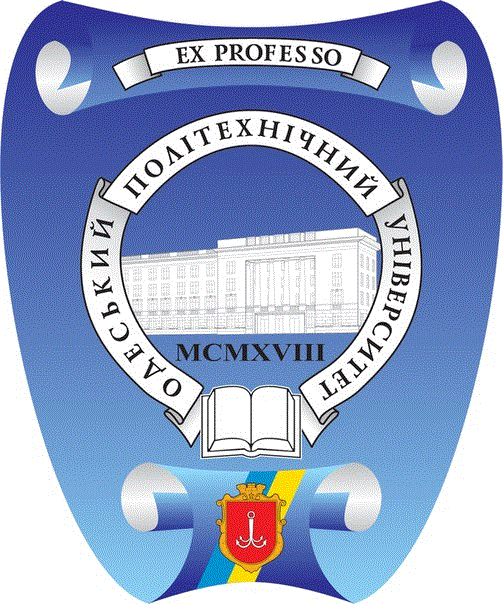
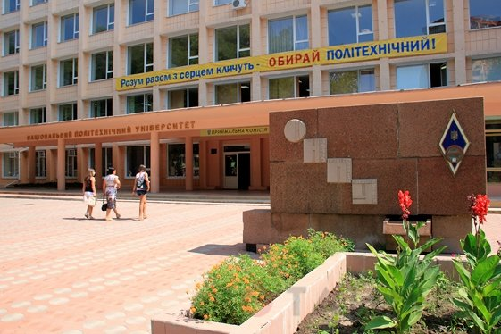

 
Одеський національний політехнічний університет / Odessa National Polytechnic University
(Одесский Национальный Политехнический Университет)
Одеський національний політехнічний університет — вищий навчальний заклад у місті Одеса. Створений 18 вересня 1918 року. В ОНПУ навчається близько 20 000 студентів, стажистів, аспірантів і докторантів,
працює близько 4 000 викладачів, наукових співробітників, інженерно-технічних працівників.
Студенти: 20000
Ректор: Оборський Геннадій Олександрович
Адреса: проспект Шевченка, 1, Oдеса, Одеська область, Україна, 65044
E-mail: press-centr@opu.ua Телефон: +38 (048) 705-84-42
Випускниця: Губич Ольга